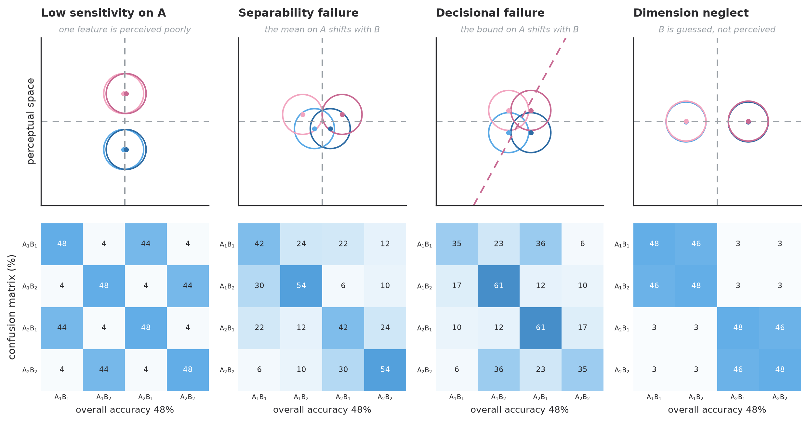

Why DS is hard to see
A decisional-separability violation can produce the same identification probabilities as a non-violated GRT model after a rotation, shear, or stretch of perceptual space.
The matrix is not the mechanism
Identification data give response probabilities for each stimulus. They do not directly reveal whether an interaction came from perception or from the response rule.
This is why decisional separability is an assumption in the current GRIN model, not a construct the estimator can test from a single confusion matrix.

Move the bound or move the space
The red decision bound violates DS because the A criterion changes with perceived B. But the same response rule is a vertical bound in a transformed coordinate system.
The schematic is conceptual. The robustness script uses exact bivariate-normal quadrant probabilities for the tilted decision rule.
A tilted bound can be absorbed into the perceptual coordinates
Define a new coordinate that measures signed distance from the tilted A-bound. The response quadrants become ordinary GRT quadrants again.
The confusion matrix cannot say whether the observer used a tilted decision bound in (X, Y), or a vertical bound in a sheared/rotated perceptual space.
Use GRIN as the demonstration
We generated clean PI/PS/DS perceptual representations, then tilted the A decision bound by slope. GRIN was then asked to fit the usual DS-assuming model to the resulting matrices.
This is not a new validation claim. It is a practical visualization of the known GRT identifiability issue.
| Quantity | Value |
|---|---|
| Seed | 20260828 |
| Matrices per DS slope | 1,800 |
| Trial range per stimulus | 12 to 200 |
| True generating class | PI, PS, DS |
| Scored outputs | construct evidence, class accuracy, parameter MAE, support warning |
| Source script | scripts/robustness_addendum.py |
False construct evidence rises; support warnings barely move
The network is not broken here. It is doing what any DS-assuming GRT estimator must do: find the best non-violated representation for data that can be re-expressed that way.
Other departures are model-mismatch problems, not the same problem
Lapses and overdispersion degrade recovery too. But DS is sharper pedagogically because the response matrix can remain perfectly compatible with a different non-violated GRT representation.
That is why the support check should be described as a training-support check, not a detector of decisional-rule violations.

What students should take away
- GRT separates perceptual and decisional explanations only under assumptions about the decision bounds.
- A single identification confusion matrix is a probability table, not a direct picture of the perceptual space.
- DS violations can masquerade as perceptual separability or correlation effects after a coordinate transformation.
- GRIN inherits this limitation because it estimates the Gaussian GRT model class; amortisation does not create new information.
- To move the boundary, change the design: add conditions with known bounds, extra observables, response times with an explicit joint model, or group-level constraints.
Good classroom figure; weak main-text contribution
The manuscript should cite the formal identifiability result and state the limitation plainly. This deck is useful because it makes the abstract equivalence visible.
| Use case | Recommended handling |
|---|---|
| Classroom or lab meeting | Use this deck |
| Reviewer asks about DS robustness | Use addendum as response/supplement |
| Main manuscript | Cite known limit; do not overclaim |
| Future project | Design-based identification, not another confusion-matrix estimator |